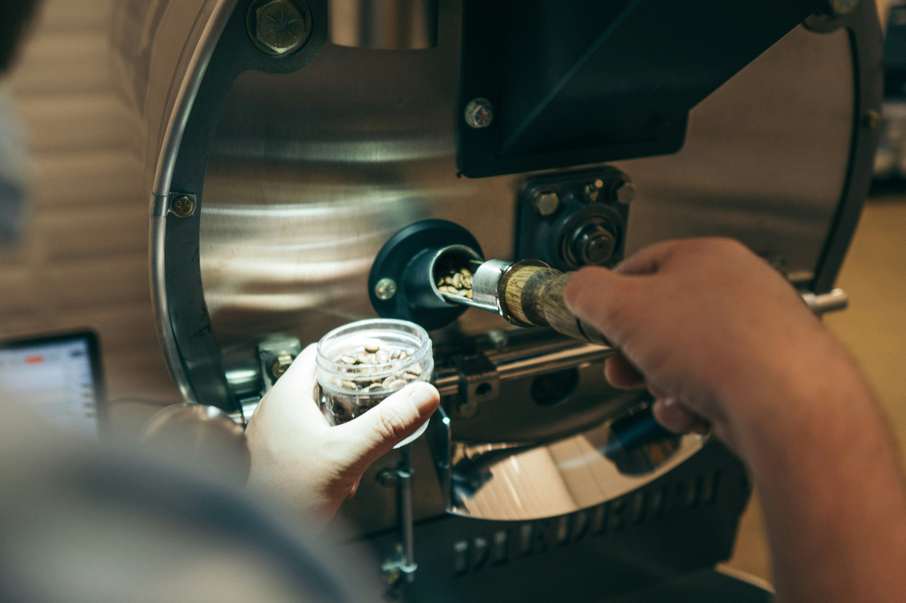
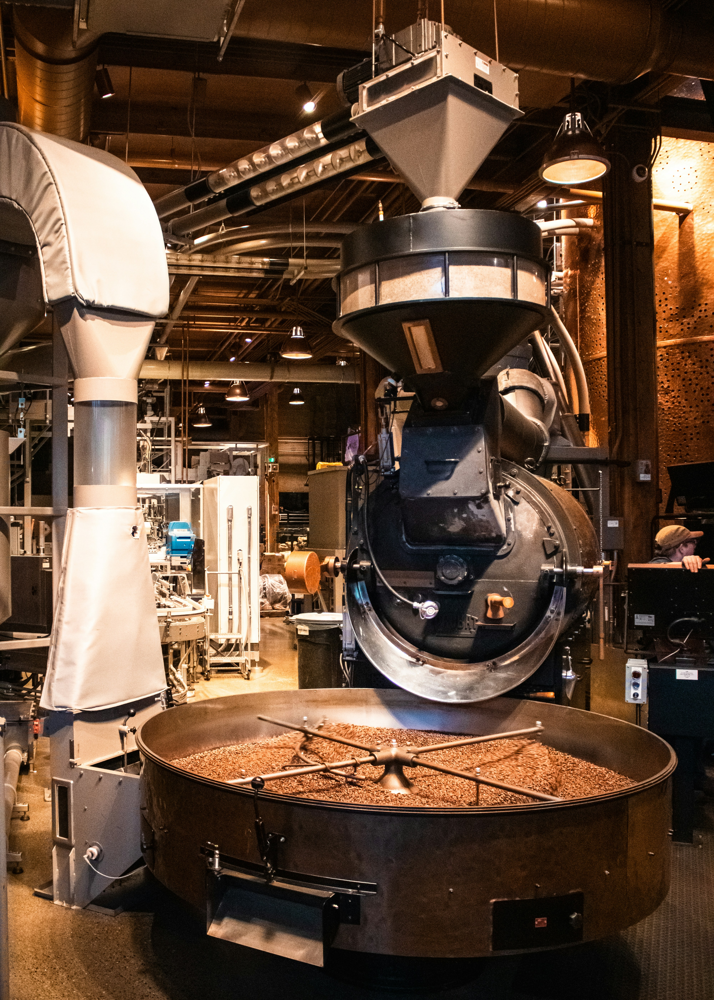

Nos Ateliers

Découverte du Café
Explorez les origines du café, ses variétés et les secrets de son arôme. Idéal pour les curieux et amateurs.

Initiation à la Torréfaction
Apprenez à torréfier vous-même votre café selon votre goût. Manipulation réelle de machines artisanales incluse.

Dégustation Guidée
Développez votre palais en goûtant différents profils de café, accompagnés d’explications par un barista expert.

Atelier Latte Art
Apprenez à dessiner sur vos cafés : cœurs, feuilles, rosettas... Une initiation artistique et ludique.